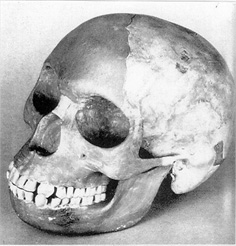

|
Piltdown ManSince the time of Darwin, a search had been underway to find the critical "missing link" that would cement the relationship between human and ape, a species containing aspects of both that would prove from whence modern man came. In 1912, the discovery of two skulls in the Piltdown Quarry of Sussex, England appeared to be that very thing; a small skull with the prominent brow of prehistoric man combined with the jawline of an ape. Success! And Piltdown man took his place alongside Neaderthals, Cro Magnon, Java and other such ancient finds. However, over the ensuing decades, reports and findings seemed to bring some doubt as to Piltdown man's place in the story; geography didn't match up to the unique aspects of the Piltdown skull and in some cases new findings contradicted it entirely. Still, the Piltdown man kept his honored place at the Paleontological table, even though more and more folks started to place it in the margins and not mention it too much in their writings. Finally, the creation of a relatively accurate age test (the Flourine Absorption test) broke that not only was the Piltdown man not the link he was thought to be, but an outright fraud. As it turned out, the Piltdown skull had been comprised of several different creatures, including a medieval-era skull (about 620 years old at the time) and a chimpanzee. While some were shocked, many scientists were more than happy to accept that this anomaly wasn't an anomaly at all. It has never been determined conclusively who devised and implemented the hoax, but one thing is clear: it was intentional. The skull had been treated to look ancient, and the unique manner of work done to it was designed to fool the expected tests of the time. However, for the relatively brief time that the Piltdown Man enjoyed legitimacy, a number of artistic renderings had been made to demonstrate how he looked and how he lived, one of the most celebrated and then reviled finds in the race to prove evolution.
Timeline
|